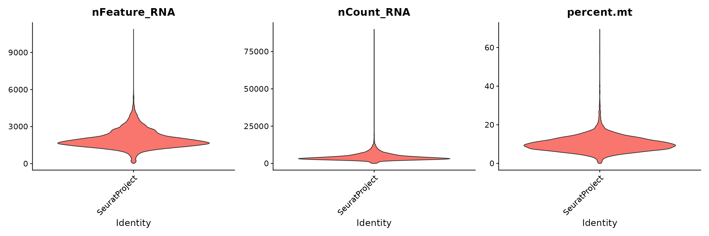
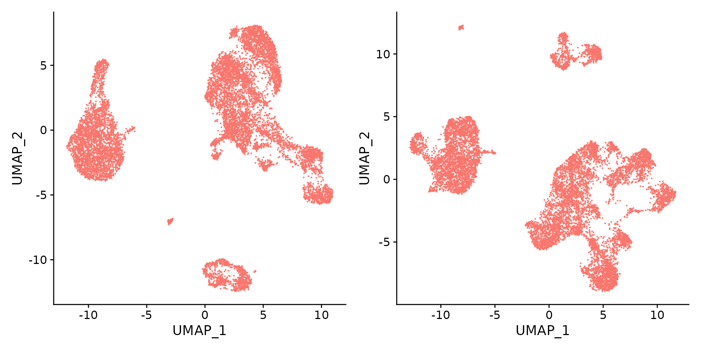

pbmc_10x_multiome.RmdIn this tutorial, we’ll demonstrate how to infer gene regulatory network using single-cell multimodal data which measures gene expression and chromatin accessibility profiles from the same single cells. We will use a publicly available 10x Genomic Multiome data set for human PBMCs.
We first download the required data.
Run the following commands to download the data:
mkdir -p 10x_pbmc
wget -q -P 10x_pbmc https://cf.10xgenomics.com/samples/cell-arc/2.0.0/pbmc_granulocyte_sorted_10k/pbmc_granulocyte_sorted_10k_atac_fragments.tsv.gz
wget -q -P 10x_pbmc https://cf.10xgenomics.com/samples/cell-arc/2.0.0/pbmc_granulocyte_sorted_10k/pbmc_granulocyte_sorted_10k_atac_fragments.tsv.gz.tbi
wget -q -P 10x_pbmc https://cf.10xgenomics.com/samples/cell-arc/2.0.0/pbmc_granulocyte_sorted_10k/pbmc_granulocyte_sorted_10k_filtered_feature_bc_matrix.h5Next, we load all necessary packages:
suppressMessages(library(ArchR))
suppressMessages(library(Seurat))
suppressMessages(library(Signac))
suppressMessages(library(scMEGA))
suppressMessages(library(Nebulosa))
suppressMessages(library(BSgenome.Hsapiens.UCSC.hg38))
suppressMessages(library(GenomeInfoDb))
suppressMessages(library(EnsDb.Hsapiens.v86))
suppressMessages(library(ggplot2))
suppressMessages(library(dplyr))
suppressMessages(library(JASPAR2020))
suppressMessages(library(TFBSTools))
suppressMessages(library(igraph))
suppressMessages(library(ggraph))Let’s load the data into memory and extract scRNA and scATAC-seq data:
inputdata.10x <- Read10X_h5("./10x_pbmc/pbmc_granulocyte_sorted_10k_filtered_feature_bc_matrix.h5")## Genome matrix has multiple modalities, returning a list of matrices for this genome
# extract RNA and ATAC data
rna_counts <- inputdata.10x$`Gene Expression`
atac_counts <- inputdata.10x$Peaks
# filter peaks by chromosome
atac_counts <- atac_counts[grep("chr", rownames(atac_counts)), ]Next create a Seurat object and filter low-quality cells in scRNA-seq data
obj.rna <- CreateSeuratObject(counts = rna_counts)
obj.rna[["percent.mt"]] <- PercentageFeatureSet(obj.rna, pattern = "^MT-")We can visualize the data quality
# Visualize QC metrics as a violin plot
VlnPlot(obj.rna, features = c("nFeature_RNA", "nCount_RNA", "percent.mt"), ncol = 3, pt.size = 0)
obj.rna <- subset(obj.rna, subset = nFeature_RNA > 200 & nFeature_RNA < 3000 & percent.mt < 20)
obj.rna## An object of class Seurat
## 36601 features across 10504 samples within 1 assay
## Active assay: RNA (36601 features, 0 variable features)Create Seurat object for scATAC-seq data:
# create seurat object
chrom_assay <- CreateChromatinAssay(
counts = atac_counts,
sep = c(":", "-"),
min.cells = 1,
genome = 'hg38',
fragments = './10x_pbmc/pbmc_granulocyte_sorted_10k_atac_fragments.tsv.gz'
)## Computing hash
obj.atac <- CreateSeuratObject(
counts = chrom_assay,
assay = "ATAC")## Warning: Keys should be one or more alphanumeric characters followed by an
## underscore, setting key from atac to atac_
# extract gene annotations from EnsDb
annotations <- GetGRangesFromEnsDb(ensdb = EnsDb.Hsapiens.v86, verbose = FALSE)## Warning in .Seqinfo.mergexy(x, y): The 2 combined objects have no sequence levels in common. (Use
## suppressWarnings() to suppress this warning.)## Warning in .Seqinfo.mergexy(x, y): The 2 combined objects have no sequence levels in common. (Use
## suppressWarnings() to suppress this warning.)
## Warning in .Seqinfo.mergexy(x, y): The 2 combined objects have no sequence levels in common. (Use
## suppressWarnings() to suppress this warning.)
## Warning in .Seqinfo.mergexy(x, y): The 2 combined objects have no sequence levels in common. (Use
## suppressWarnings() to suppress this warning.)
## Warning in .Seqinfo.mergexy(x, y): The 2 combined objects have no sequence levels in common. (Use
## suppressWarnings() to suppress this warning.)
## Warning in .Seqinfo.mergexy(x, y): The 2 combined objects have no sequence levels in common. (Use
## suppressWarnings() to suppress this warning.)
## Warning in .Seqinfo.mergexy(x, y): The 2 combined objects have no sequence levels in common. (Use
## suppressWarnings() to suppress this warning.)
## Warning in .Seqinfo.mergexy(x, y): The 2 combined objects have no sequence levels in common. (Use
## suppressWarnings() to suppress this warning.)
## Warning in .Seqinfo.mergexy(x, y): The 2 combined objects have no sequence levels in common. (Use
## suppressWarnings() to suppress this warning.)
## Warning in .Seqinfo.mergexy(x, y): The 2 combined objects have no sequence levels in common. (Use
## suppressWarnings() to suppress this warning.)
## Warning in .Seqinfo.mergexy(x, y): The 2 combined objects have no sequence levels in common. (Use
## suppressWarnings() to suppress this warning.)
## Warning in .Seqinfo.mergexy(x, y): The 2 combined objects have no sequence levels in common. (Use
## suppressWarnings() to suppress this warning.)
## Warning in .Seqinfo.mergexy(x, y): The 2 combined objects have no sequence levels in common. (Use
## suppressWarnings() to suppress this warning.)
## Warning in .Seqinfo.mergexy(x, y): The 2 combined objects have no sequence levels in common. (Use
## suppressWarnings() to suppress this warning.)
## Warning in .Seqinfo.mergexy(x, y): The 2 combined objects have no sequence levels in common. (Use
## suppressWarnings() to suppress this warning.)
## Warning in .Seqinfo.mergexy(x, y): The 2 combined objects have no sequence levels in common. (Use
## suppressWarnings() to suppress this warning.)
## Warning in .Seqinfo.mergexy(x, y): The 2 combined objects have no sequence levels in common. (Use
## suppressWarnings() to suppress this warning.)
## Warning in .Seqinfo.mergexy(x, y): The 2 combined objects have no sequence levels in common. (Use
## suppressWarnings() to suppress this warning.)
## Warning in .Seqinfo.mergexy(x, y): The 2 combined objects have no sequence levels in common. (Use
## suppressWarnings() to suppress this warning.)
## Warning in .Seqinfo.mergexy(x, y): The 2 combined objects have no sequence levels in common. (Use
## suppressWarnings() to suppress this warning.)
## Warning in .Seqinfo.mergexy(x, y): The 2 combined objects have no sequence levels in common. (Use
## suppressWarnings() to suppress this warning.)
## Warning in .Seqinfo.mergexy(x, y): The 2 combined objects have no sequence levels in common. (Use
## suppressWarnings() to suppress this warning.)
## Warning in .Seqinfo.mergexy(x, y): The 2 combined objects have no sequence levels in common. (Use
## suppressWarnings() to suppress this warning.)
## Warning in .Seqinfo.mergexy(x, y): The 2 combined objects have no sequence levels in common. (Use
## suppressWarnings() to suppress this warning.)
# change to UCSC style since the data was mapped to hg38
seqlevelsStyle(annotations) <- 'UCSC'
# add the gene information to the object
Annotation(obj.atac) <- annotationsMake sure that the two modalities have the same cells:
cell.sel <- intersect(colnames(obj.rna), colnames(obj.atac))
obj.rna <- obj.rna[, cell.sel]
obj.atac <- obj.atac[, cell.sel]We next process the data using standard Seurat analysis pipeline:
obj.rna <- obj.rna %>%
SCTransform(verbose = FALSE) %>%
RunPCA(verbose = FALSE) %>%
RunUMAP(dims = 1:30, verbose = FALSE)## Warning: The default method for RunUMAP has changed from calling Python UMAP via reticulate to the R-native UWOT using the cosine metric
## To use Python UMAP via reticulate, set umap.method to 'umap-learn' and metric to 'correlation'
## This message will be shown once per session
obj.atac <- obj.atac %>%
RunTFIDF() %>%
FindTopFeatures() %>%
RunSVD() %>%
RunUMAP(reduction = 'lsi', dims = 2:30, verbose = FALSE)## Performing TF-IDF normalization## Running SVD## Scaling cell embeddingsVisualize the scRNA-seq and scATAC-seq separately.
